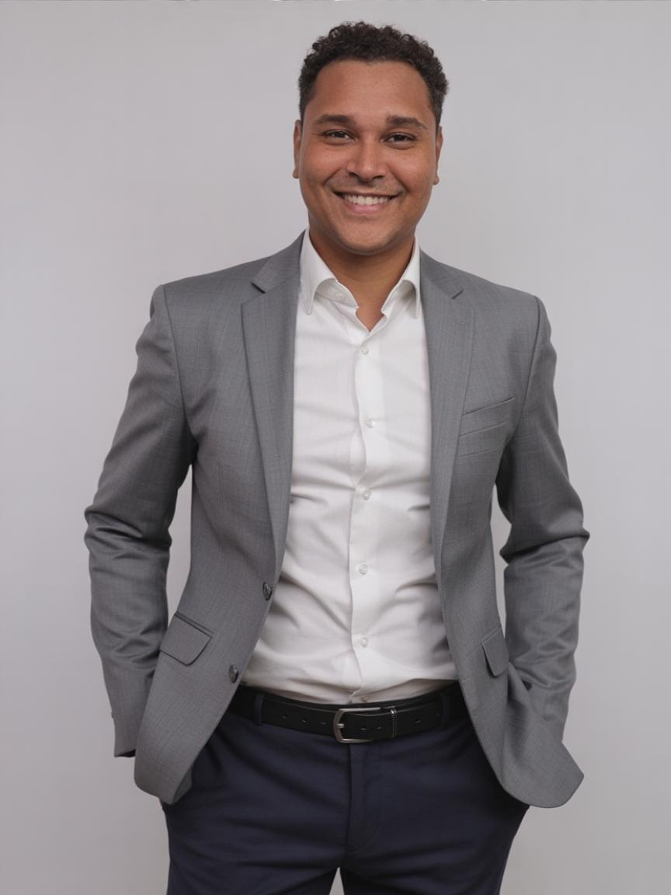

Lei Rouanet
Projetos aprovados no Ministério da Cultura para clientes de perfis diferentes: do cadastro do proponente ao plano de distribuição, com enquadramento no artigo 18 ou 26.
A ProduPlay escreve, aprova, executa e presta contas de projetos culturais. Lei Rouanet, ICMS-RJ, ISS Rio, PNAB, TransfereGov e Converj, com a conta fechada no final.
Estes são os instrumentos em que já aprovamos projetos, cadastros e reconhecimentos para diversos clientes. Cada um tem plataforma, norma e prazo próprios, e a gente opera todos por dentro.
Projetos aprovados no Ministério da Cultura para clientes de perfis diferentes: do cadastro do proponente ao plano de distribuição, com enquadramento no artigo 18 ou 26.
Propostas, planos de trabalho e prestação de contas aprovados na plataforma de repasses da União.
A plataforma de convênios e repasses do Estado do Rio de Janeiro: propostas cadastradas, aprovadas e com as contas prestadas.
Projetos aprovados na lei estadual de incentivo, prontos para receber patrocínio de empresas que abatem parte do ICMS.
Projetos aprovados na lei municipal de incentivo à cultura do Rio de Janeiro, com patrocínio abatido do ISS.
Editais de fomento em que o recurso já existe e é disputado por seleção: Política Nacional Aldir Blanc, Lei Paulo Gustavo, Cultura Viva e editais municipais e estaduais.
Projetos escritos para consulados, UNESCO e fundos internacionais voltados ao terceiro setor, no formato e no idioma que cada financiador pede.
Inscrição e regularização de organizações no CMAS, a porta de entrada para parcerias e editais da assistência social.
Certificação de coletivos e instituições como Ponto ou Pontão de Cultura, o reconhecimento da Política Nacional Cultura Viva para quem faz ação cultural continuada no território. Documentação e cadastro em ordem.
Relatório, notas, extratos e comprovações no formato de cada órgão, protocolados no prazo. É a etapa em que a maioria tropeça e a que a gente mais gosta de fechar.
Como fazemos →Quem faz cultura, quem fomenta e quem patrocina precisam do mesmo: projeto bem escrito, executado direito e comprovado no fim.
Você tem a ideia e o público. Nós transformamos isso em proposta viável e cuidamos da parte que trava: orçamento, plataforma, prazo e prestação de contas.
Nossa equipe já operou a PNAB e a Lei Paulo Gustavo dentro de uma secretaria e há mais de dez anos avalia projetos como parecerista em editais municipais, estaduais e federais, em todo o Brasil. Sabemos o que a norma cobra e o que o Tribunal olha.
Quando a sua marca ou instituto realiza ou apoia um projeto cultural, entregamos a execução com nota fiscal, relatório e imagem preservada.
Só oferecemos o que executamos com a nossa própria equipe.
Da ideia solta ao projeto aprovado: Lei Rouanet, ICMS-RJ, ISS Rio, PNAB e editais de fomento direto, TransfereGov e Converj. Inclui cadastros e reconhecimentos (CMAS, Pontos e Pontões de Cultura) e a prestação de contas.
Saiba mais →Cronograma, equipe, fornecedores, licenças e segurança do público, do primeiro contato até a desmontagem. Espetáculos, festivais, feiras, cursos e obras audiovisuais.
Saiba mais →Programação, ocupação do espaço, equipe, parcerias e sustentabilidade de teatros, bibliotecas e centros culturais.
Saiba mais →Análise e avaliação de projetos culturais em comissões de seleção, com critérios claros, notas fundamentadas e parecer escrito.
Saiba mais →Cursos, mentorias e consultoria sobre editais, leis de incentivo, captação de recursos e prestação de contas, com diagnóstico de desenvolvimento institucional para ONGs. Duas edições do Da Ideia ao Projeto realizadas.
Ver cursos →Não fazemos captação de patrocínio para terceiros. O que fazemos é preparar a sua organização para captar: formação em captação de recursos, consultoria e diagnóstico de desenvolvimento institucional para ONGs.
Ver formação e consultoria →Quatro etapas, cada uma com uma entrega que você recebe em mãos.
Entendemos a ideia, o público, o prazo e o dinheiro possível. Dizemos com franqueza em qual edital ou lei ela cabe, e em qual não cabe.
Mapa de oportunidades e parecer de viabilidadeEscrevemos proposta, orçamento e plano de trabalho na linguagem que a comissão avalia, e cuidamos do cadastro na plataforma.
Projeto inscrito e checklist de documentosCoordenamos equipe, fornecedores, licenças e segurança, com cada entrega registrada em foto, lista de presença e nota.
Relatório de execução com evidênciasOrganizamos notas, relatórios e comprovações no formato do órgão, para o projeto fechar sem pendência.
Prestação de contas protocoladaSe a ideia não cabe em edital nenhum agora, a gente diz e mostra o que precisa mudar. É mais barato ouvir isso no primeiro café do que no relatório final.
Contar a minha ideia →Cultura que fecha a conta é cultura que continua.
Curso de Produção Executiva no Audiovisual · São Gonçalo, 2024 · Lei Paulo GustavoCursos que já aconteceram e a lista de espera para as próximas turmas.
Captação de recursos e leis de incentivo em três encontros ao vivo: o ecossistema dos editais, a ideia virando projeto e do projeto à captação. Certificado de participação.
A Lei Rouanet na prática, com a plataforma aberta na tela: artigo 18 ou 26, projeto normal ou especial, planos anuais e plurianuais.
Ver o programa →
Sete módulos, do fundamento à distribuição, gratuito para profissionais e estudantes de audiovisual de São Gonçalo.
Ver o curso →Quem escreve o edital, quem avalia o projeto e quem executa. Nossa equipe já fez os três.
Parecerista e gestora de projetos há mais de dez anos, avalia projetos culturais em todos os estados e em diversas cidades do país, inclusive projetos estaduais do Rio de Janeiro. Liderou a aprovação de centenas de projetos culturais e sociais com marcas como Avon, Globo e Uber, além de editais e parcerias públicas. Foi coordenadora no Observatório de Favelas e lecionou Produção Cultural no IFRJ. Doutora em Geografia (UFF), mestre em Engenharia de Produção (COPPE/UFRJ).

Mais de dez anos em arte e cultura. Bacharel em Produção Cultural (IFRJ), tecnólogo em Marketing Digital, MBA em Gestão de Pessoas (UFRJ) e especialização em Gestão de Projetos (IFRJ). Operacionalizou a PNAB, a Lei Paulo Gustavo e o Prêmio Cultura Viva na Secretaria de Turismo e Cultura de São Gonçalo e há mais de dez anos atua como parecerista de projetos culturais em todo o Brasil.
Rizoma, incubadora parceira na realização das duas edições do curso Da Ideia ao Projeto.
Conta para a gente em uma mensagem. Respondemos com franqueza se dá para fazer, em que prazo e por onde começar.